Okinawa
An island of snakes and crowns
I thought Okinawa, the group of islands out between Japan and Taiwan, was a natural paradise. Unfortunately, the islands are so small and flat compared to the Japanese mainland that they have essentially become sprawling towns (perhaps similar to Auckland) so although they have stunning beaches, they can’t boast the same untouched beauty as parts of New Zealand. Having said that, going on holiday there with Jackie made for a fun diversion from the overcrowdedness of Tokyo.
It takes about 3 hours to fly from Tokyo to Naha (the capital of Okinawa). It was dark by the time we arrived so we didn’t get to see much, but we did see the sun setting prettily over the Pacific ocean during the flight.
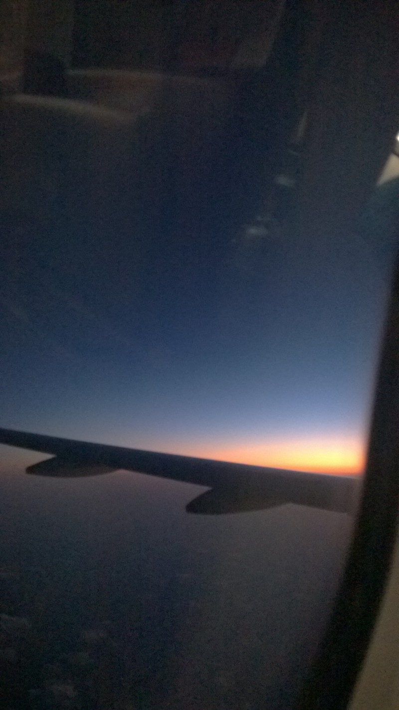
We ended up having a very late start the first day — we woke up late and then spent a long time faffing around trying to rent a car. We had quite a sober afternoon looking at war memorials, particularly one dedicated to the Himeyuri girls, a group of over 200 students and teachers forced to work as nurses during the American invasion of Okinawa in World War 2. These students were eventually “discharged” from service when the success of the invasion seemed inevitable, and were essentially thrown out of the caves they’d been working in to fend for themselves amid constant bombardment from the American forces. Many jumped off cliffs and drowned, and many others committed suicide. It was a real reminder that the moments everyone knows about (Hiroshima, Pearl Harbor, the D Day landings) are only a tiny fraction of what happened during the war.
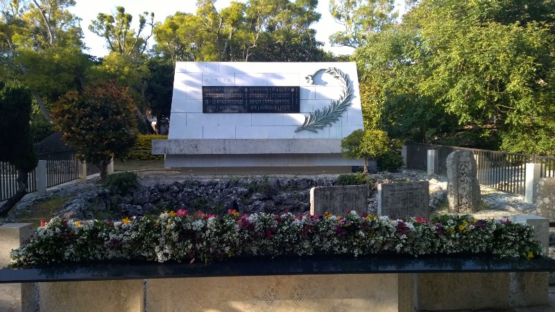
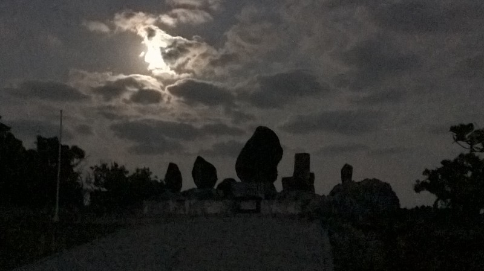
The next day involved a much more cheerful visit to Okinawa World, a place which is very hard to categorise. It’s basically a whole collection of souvenir shops with various attractions around them, including a kilometre-long cave passage, traditional dance shows and a snake museum.
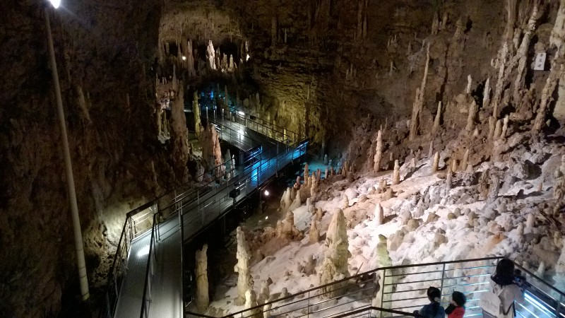
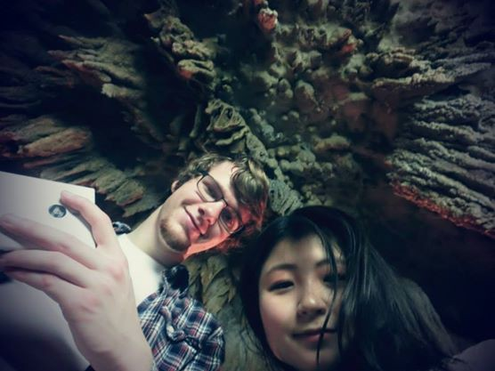
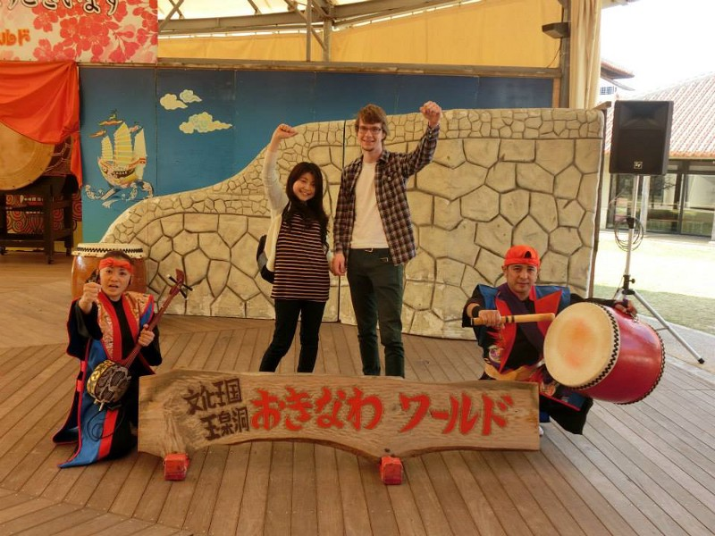
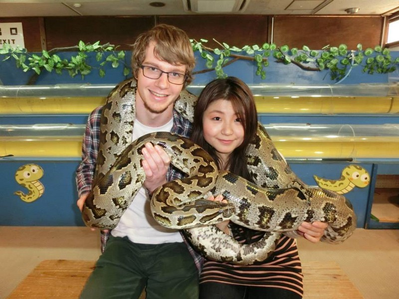
On our last full day we drove way up north to Okinawa’s most famous aquarium. Seeing whale sharks was definitely the highlight of that outing, but unfortunately I couldn’t get any good pictures—the sharks swim too fast for my poor phone and just look like grey smears in my photos.
Okinawa actually got its current name relatively recently — before that it was an semi-independent kingdom with ties to China, known as Ryukyu. Before flying out, we managed to look around Shuri castle, the home of the Ryukyuan kings of old.
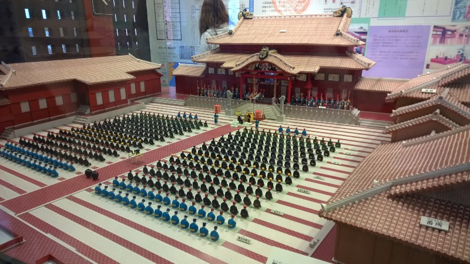
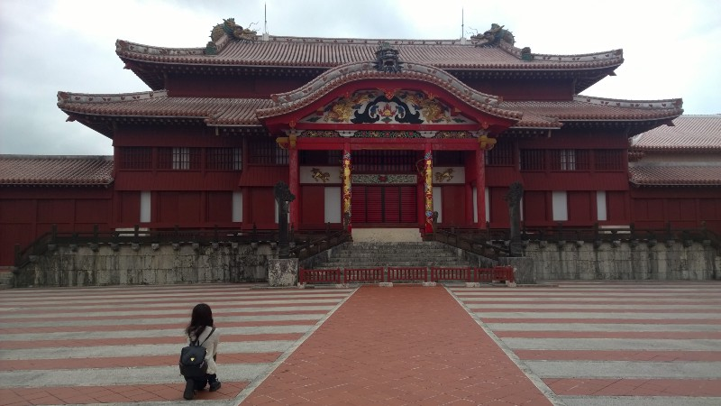
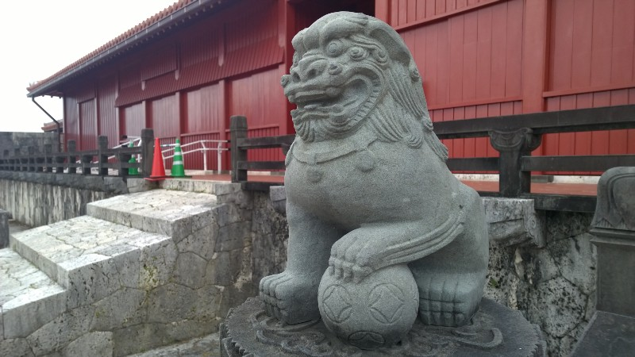
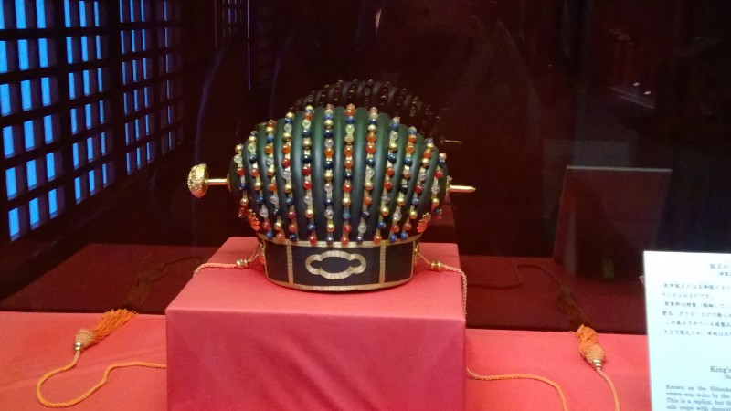
A few more observations:
- A surprising percentage of Okinawa’s land area is taken up by an American military base. This is obviously a very controversial thing, but given the number of places which look like they cater to off-duty American troops, Okinawa’s tourist industry would probably suffer if it was removed …
- There’s a surprising amount of steak in Okinawa (it’s quite hard to find in Tokyo) — perhaps also catering to the American appetite?
- I definitely need to make a video game set here sometime — the culture is fascinating and the caves and castles would look so cool!
All in all, a fascinating trip. Okinawa is still definitely Oriental, but the culture, food and atmosphere are surprisingly different from the Japanese mainland. Recommended!